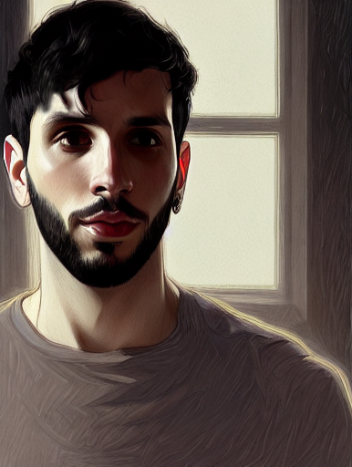

Artista Digital y Diseñador Web
Mi nombre es Luc. Me considero principalmente un artista digital con múltiples habilidades, con más de 10 años de experiencia en la industria, pero tambien soy un diseñador web.
Mi viaje como artista digital comenzó ya a los 17 años cuando me inscribí en la carrera de Licenciatura de Artes Visuales de la Facultad de Artes de la Universidad Nacional de Córdoba. Mientras transitaba la carrera, despertó mi interes por el diseño web, por lo cual fui ampliando mi gama de conocimientos en esta área tambien, de forma autodidacta.
Mi trabajo es algo que hago con mucha honestidad, pasión y compromiso. En los últimos años tuve la oportunidad de conducir y hacer trabajos para algunas empresas increíbles de todo el mundo. Actualmente soy autónomo y me encuentro trabajando con proyectos de artes a pedido. En mi tiempo libre me encontrarás explorando y viajando por el mundo. Me encantan las nuevas aventuras, conocer gente nueva y capturar principalmente los momentos con mi cámara. La fotografía en sí puede enseñarnos mucho sobre la impresión visual y la narración de cuentos como la vida misma.
No me gusta definirme por el trabajo que he hecho. Me defino por el trabajo que quiero hacer. Las habilidades se pueden enseñar, la personalidad es inherente. Prefiero seguir aprendiendo, seguir desafiándome y hacer cosas interesantes que importen.
Impulsado por una energía y un entusiasmo ilimitado, me inspiro fácilmente y estoy más que dispuesto a seguir mis fascinaciones dondequiera que me lleven. Soy un espíritu apasionado, expresivo y polifacético con una habilidad natural para entretener e inspirar. Nunca estoy satisfecho con sólo pensar en ideas. En cambio, tengo una necesidad casi impulsiva de actuar sobre ellos.
Mi energía me impulsa en la búsqueda de muchos intereses, pasatiempos, áreas de estudio y esfuerzos artísticos. Aprendo rápido, soy capaz de adquirir nuevas habilidades y hacer malabarismos con diferentes proyectos y roles con relativa facilidad.
Me gusta desarrollar experiencia en una serie de áreas a lo largo de mi vida y carrera. Mi tipo de personalidad es ESTJ-A. Actualmente trabajo de forma remota, con proyectos a pedido provenientes de mis redes sociales y una base de clientes independientes seleccionados. De todas maneras, estoy abierto a nuevas oportunidades.
Skills
Skills Técnicas
Skills Profesionales
Formación
Formación Académica
Licenciatura en Artes Visuales
Universidad Nacional de Córdoba 2009 - 2015Tecnicatura en Diseño Grafico
Instituto IES Siglo 21 2010 - 2013Diseñador Web
Instituto Alura 2014 - 2016Experiencia Laboral
Diseñador Gráfico
Beker Diseños 2012 - 2015Es una mediana empresa local de Argentina, dedicada principalmente a la publicidades comerciales.
Desarrollador Gráfico
Technological Revolution 2016 - 2019Es una gran empresa que tiene sucursales en varios paises de Latinoámerica, dedicada a la publicidad de productos informaticos y videojuegos.
Artista Digital
Luc. Pesce Art 2013 - PresenteMi principal pasion es la ilustración digital, por lo que todo mi esfuerzo se encuentra en publicitarme en redes las redes. Si quieres conocer mis trabajos, puedes hechar un vistazo aquí!